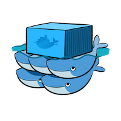

Deploy JupyterHub
to Docker Swarm
Open jupyterhub.surge.sh
Go to Setup and get started
Use the arrow keys to navigate
Instructors
| Kyle Kelley | @rgbkrk |
| Ash Wilson | @smashwilson |
Goals
- Learn Docker Swarm fundamentals
- Deploy JupyterHub to Swarm via Carina
Agenda
Setup
Log In
Log in to the Carina GUI.
- Create an account
- Log In
- Don't create a cluster just yet
- Get your API Key under your username in the top right corner
Installation
- Git
- Docker Version Manager
- Utility for managing Docker client versions
- Manage Docker client versions with dvm
- Do the Install dvm section only
dvm install 1.10.1- Carina CLI
- The CLI for the Caria API
- Getting started with the Carina CLI
- Do the Download and install the CLI and Configure with Carina credentials sections only
carina ls
Site Overview
Get a feel for the Carina website.
- Carina
- Documentation
- Note the Edit on GitHub links on every page
- Community
- Use your Carina login
- Blog
- Subscribe via RSS
Add a Cluster
Setup a cluster where we can run Docker containers
- Log In
- Add Cluster
- Cluster Name: mycluster
- Enable Autoscale: unchecked
- Get Access
- Download File
- Unzip
- List files
Docker
Benefits
- Better resource utilization
- Application packaging (Docker images)
- Process isolation
- Reproducible environments
- Immutable infrastructure
- Composable
- Multi-Cloud
- Encourages üêÆüêÆüêÆ
Docker Client
The CLI for the Docker API
- Containers
- Images
- Volumes
- Networks
- etc
Docker Environment
$ alias de="env | grep DOCKER_"
$ cd Downloads/mycluster
$ cat README.md
Using Your Swarm Cluster
========================
This directory contains all of the files the Docker CLI will need to
communicate with your Swarm Cluster...
$ source docker.env
$ de
DOCKER_HOST=tcp://146.20.68.14:2376
DOCKER_TLS_VERIFY=1
DOCKER_CERT_PATH=/Users/everett/Downloads/mycluster
DOCKER_VERSION=1.10.1
$ dvm use
Now using Docker 1.10.1
Docker Swarm and Carina
Docker Swarm
- Many Docker Hosts, one API endpoint
- Introduces new concepts, like affinities
- Scheduling according to resource constraints
Carina
Push Button, Receive Swarm

Carina CLI
See installation and configuration instructions
List your Clusters
$ carina ls
ClusterName Flavor Segments AutoScale Status
mycluster container1-4G 1 false active
$ carina ls
ClusterName Flavor Segments AutoScale Status
mycluster container1-4G 1 false active
* DO NOT run the commands below right now, they take a few minutes to execute.
Create a Cluster*
$ carina create --wait foobar
ClusterName Flavor Segments AutoScale Status
foobar container1-4G 1 false active
Rebuild a Cluster*
$ carina rebuild foobar
ClusterName Flavor Segments AutoScale Status
foobar container1-4G 1 false rebuilding-swarm
Carina CLI Continued
Load the Docker environment for your Cluster
$ carina env mycluster
source /Users/caro8994/.carina/clusters/carolynvsrax/mycluster/docker.env
# Run the command below to get your Docker environment variables set:
# eval $(carina env mycluster)
PS> carina env mycluster --shell powershell
. C:\Users\caro8994\carina\clusters\carolynvsrax\mycluster\docker.ps1
# Run the command below to get your Docker environment variables set:
# carina env mycluster --shell powershell | iex
$ eval $(carina env mycluster)
PS> carina env mycluster --shell powershell | iex
$ docker ps
CONTAINER ID IMAGE COMMAND CREATED STATUS
ab668e03cafb logjam "tail -f /var/log/foo" 3 seconds ago Up 3 seconds
Carina CLI Continued
Grow Your Cluster
$ carina ls
ClusterName Flavor Segments AutoScale Status
mycluster container1-4G 1 false active
$ carina grow --by 1 mycluster
ClusterName Flavor Segments AutoScale Status
mycluster container1-4G 1 false growing
$ carina ls
ClusterName Flavor Segments AutoScale Status
mycluster container1-4G 2 false active
Swarm Scheduling in Action
$ docker run --name whoa1 --detach --publish 80:8080 rackerlabs/whoa
44aff6801d136ae7ba49ad074d94a7ba94740326f8d9099d7830ec8095abdf72
$ docker port whoa1 8080
104.130.0.119:80
$ docker run --name whoa2 --detach --publish 80:8080 rackerlabs/whoa
5e0a9815f9558c7a26a44f3bb214f241a5fbf26e01e008739dff64e39c802fce
$ docker port whoa2 8080
104.130.0.117:80
$ curl $(docker port whoa1 8080/tcp)
üéâ Whoa! üéâ
Lab #2
- Create a new cluster
- Grow the cluster to 3 segments
- Load the Docker environment for the new cluster
- Run 3 instances of
rackerlabs/whoaon port 80 - Stop the containers and remove them
Where does it run?
Factors that implicitly influence container placement
--publishfinds a node with the published port free--volumes-fromuses the same segment as the named container
Constraints and Affinity
Explicitly influence where your containers run
Set by environment variables or build arguments
# Run on the same node as another container
$ docker run --env affinity:container==backend ...
# Run on a node where image is available
$ docker run --env affinity:image==myapp ...
# Explicit node name
$ docker run --env constraint:node==*-n1 ...
# Build a new image on the same node as an existing container
$ docker build --build-arg affinity:image==myapp -t myapp:v2 .
Carina Clusters
- 1 to 3 "segments"; LXC containers on a physical host
- 20 GB disk space, 4 GB memory, 2 vCPUs per segment
- Each segment has its own public IP, discoverable via
docker info
$ docker info
Containers: 9
Images: 13
Role: primary
Strategy: spread
Filters: health, port, dependency, affinity, constraint
Nodes: 3
6dcd3c04-fab5-4367-ac39-d8b17c41c39c-n1: 172.99.73.138:42376
└ Containers: 3
└ Reserved CPUs: 0 / 12
└ Reserved Memory: 0 B / 4.2 GiB
└ Labels: executiondriver=native-0.2, kernelversion=3.18.21-1-rackos, ...
Carina Restrictions
tldr: You don't have access to the underlying Docker host
--volume HOST:CONTAINER--privileged--cap-add/dropCarina Resources
Break
Notebook
Outline
- Interactive Literate Coding
- Collaboration
- Visualization
- Rich objects
- Share-able documents
Living Code

Let's try it live!
tmpnb.org
JupyterHub on Carina
JupyterHub Architecture
- Notebook servers for users
- Configurable HTTP Proxy
- Bring your own auth
Outline
- Create a new cluster
- Clone the repo for this preso
- Rely on jupyterhub-launch
Create a new cluster
carina create jupyterhub --wait
Clone this repo
git clone https://github.com/everett-toews/jupyterhub-on-docker-swarm
If you don't have git, download the repository.
Configure GitHub OAuth
Get your segment IP address
$ eval $(carina env jupyterhub)
PS> carina env jupyterhub | iex
$ echo "Segment IP: $(docker run --rm --net=host racknet/ip public ipv4)"
Segment IP: 146.20.68.51
Configure GitHub OAuth Cont.
Create a new developer application on GitHub

Configure GitHub OAuth Cont.
Copy your secrets
Yes, I reset my secret after this screenshot...
Launch
$ cd jupyterhub-on-docker-swarm/jupyterhub-launch
$ export DNSNAME=$(docker run --rm --net=host racknet/ip public ipv4)
$ export JUPYTERHUB_USERS=
$ export GITHUB_CLIENT_ID=
$ export GITHUB_CLIENT_SECRET=
$ ./launch.sh
PS> carina env jupyterhub --shell powershell | iex
PS> $env:DNSNAME=$(docker run --rm --net=host racknet/ip public ipv4); `
$env:JUPYTERHUB_USERS="<github-user>"; `
$env:GITHUB_CLIENT_ID="<github-client-id>"; `
$env:GITHUB_CLIENT_SECRET="<github-client-secret>"; `
.\launch.ps1
Your web browser should automatically open to display JupyterHub.
Start your Jupyter Notebook
- Sign in with GitHub.
- Start your Jupyter server.
- Copy a notebook to your server
- Open the Welcome to Python notebook.
docker cp welcome-to-python.ipynb jupyter-<github-user>:/home/jovyan/work